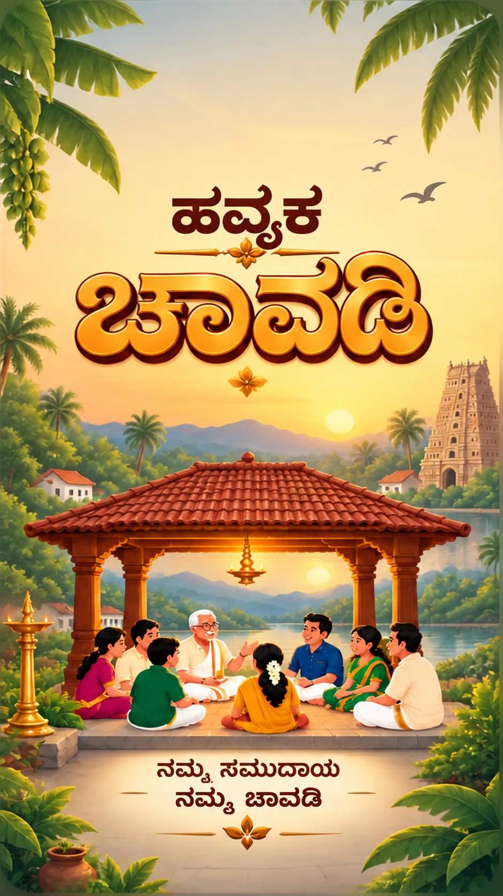

ಸದಸ್ಯರ ಬರಹ ಮತ್ತು ಮಾತುಕತೆ
ನಿಮ್ಮ ಸಮಾಚಾರ ಹಂಚಿಕೊಳ್ಳಿ, ಸಮುದಾಯದೊಂದಿಗೆ ಅರ್ಥಪೂರ್ಣ ಮಾತುಕತೆಗೆ ಜಾಗ ನೀಡಿ.
ಏನು ಯೋಜನೆಯಲ್ಲಿದೆ?
- ದೃಢೀಕೃತ ಸದಸ್ಯರಿಂದ ಬರಹ ಮತ್ತು ಚಿತ್ರಗಳು
- ಪ್ರತಿಕ್ರಿಯೆಗಳು, ಅಭಿಪ್ರಾಯಗಳು ಮತ್ತು ಉತ್ತರಗಳು
- ಸ್ವಂತ ಬರಹ ತಿದ್ದುಪಡಿ, ಅಳಿಸುವಿಕೆ ಮತ್ತು ದೂರು ವ್ಯವಸ್ಥೆ
ಪರಿಚಯವಾಗಲು, ಸಂಭ್ರಮಿಸಲು, ಕಲಿಯಲು ಮತ್ತು ಪರಸ್ಪರ ನೆರವಾಗಲು ಹೊಸ ಮಾರ್ಗಗಳು. ಯೋಜನೆಯಲ್ಲಿರುವ 21 ಸೌಲಭ್ಯಗಳನ್ನು ನೋಡಿ, ಮುಂದಿನ ಹೆಜ್ಜೆ ರೂಪಿಸಲು ನೆರವಾಗಿ.
ಶೀಘ್ರದಲ್ಲೇ
ಆ್ಯಪ್ನಲ್ಲಿ ಸದಸ್ಯರು ನೋಂದಣಿಯ ವೇಳೆ 40 ಆಸಕ್ತಿಗಳಲ್ಲಿ ತಮ್ಮ ಮೊದಲ ಮೂರು ಆಯ್ಕೆಮಾಡಬಹುದು ಅಥವಾ ನಂತರ ಬದಲಿಸಬಹುದು. ಯಾವ ಸೌಲಭ್ಯ ಮೊದಲು ರೂಪಿಸಬೇಕೆಂದು ನಿರ್ಧರಿಸಲು ಈ ಆಯ್ಕೆಗಳು ನೆರವಾಗುತ್ತವೆ.
21 ಯೋಜಿತ ಸೌಲಭ್ಯಗಳು
ನಿಮ್ಮ ಸಮಾಚಾರ ಹಂಚಿಕೊಳ್ಳಿ, ಸಮುದಾಯದೊಂದಿಗೆ ಅರ್ಥಪೂರ್ಣ ಮಾತುಕತೆಗೆ ಜಾಗ ನೀಡಿ.
ನಿಮಗೆ ಮುಖ್ಯವಾದ ಸುದ್ದಿಯನ್ನು ನಿಮ್ಮ ಅನುಕೂಲದ ಸಮಯದಲ್ಲಿ ಪಡೆಯಿರಿ.
ಒಂದೇ ಹುಡುಕಾಟದಲ್ಲಿ ನಿಮ್ಮ ಚಾವಡಿಯ ಉಪಯುಕ್ತ ವಿಷಯಗಳನ್ನು ಕಂಡುಕೊಳ್ಳಿ.
ಆತ್ಮೀಯ ಆಹ್ವಾನ ಮತ್ತು ವಿಶ್ವಾಸದ ಪರಿಚಯದ ಮೂಲಕ ಸಮುದಾಯಕ್ಕೆ ಹೊಸಬರನ್ನು ಕರೆತನ್ನಿ.
ಹಂಚಿಕೊಂಡ ಆಸಕ್ತಿ, ಊರು ಅಥವಾ ವೃತ್ತಿಯಿಂದ ಪರಿಚಯ ಆರಂಭವಾಗಲಿ.
ಚಾವಡಿಯನ್ನು ಇನ್ನಷ್ಟು ಸುಲಭ, ವಿಶ್ವಾಸಾರ್ಹ ಮತ್ತು ಆರಾಮದಾಯಕವಾಗಿಸಲು ನೆರವಾಗಿ.
ಸಂಭ್ರಮ, ಸಾಧನೆ ಮತ್ತು ಸ್ಮರಣೆಗೆ ಆತ್ಮೀಯ ಜಾಗ.
ನಿಮ್ಮದೇ ವಲಯದ ಪ್ರಮುಖ ಸುದ್ದಿಯೊಂದಿಗೆ ಊರಿಗೆ ಇನ್ನಷ್ಟು ಹತ್ತಿರವಾಗಿ.
ಸಮುದಾಯವನ್ನು ಮನೆಯಂತೆ ಮಾಡುವ ಕ್ಷಣಗಳಲ್ಲಿ ಒಟ್ಟಾಗೋಣ.
ಕ್ಯಾಲೆಂಡರ್ ಮತ್ತು ಖಾಸಗಿ ಜ್ಞಾಪನೆಗಳೊಂದಿಗೆ ಸಂಪ್ರದಾಯಕ್ಕೆ ಹತ್ತಿರವಾಗಿರಿ.
ಸಮುದಾಯದ ಕೌಶಲ್ಯ ಮತ್ತು ವಿಶ್ವಾಸಾರ್ಹ ಸೇವೆಗಳು ಒಂದೇ ಆತ್ಮೀಯ ಜಾಗದಲ್ಲಿ.
ನಮ್ಮ ಕೃಷಿ ಬೇರನ್ನು ಜೀವಂತವಾಗಿಡುವವರಿಗೆ ಅಡಿಕೆಯ ಅಂಗಳ.
ಹವ್ಯಕ ಪದ, ಅಡುಗೆ, ಕಥೆ ಮತ್ತು ಕಲೆ ಮುಂದಿನ ತಲೆಮಾರಿಗೂ ಉಳಿಯಲಿ.
ಹೊಸ ಊರಿನಲ್ಲೂ ನಮ್ಮ ಸಮುದಾಯದ ಪರಿಚಯದ ಆತ್ಮೀಯತೆ ಸಿಗಲಿ.
ಸ್ವಯಂ ಒಪ್ಪಿದ ದಾನಿಗಳನ್ನು ಸಂಪರ್ಕಿಸಲು ದೃಢೀಕೃತ ಸದಸ್ಯರಿಗೆ ಯೋಜಿತ ವ್ಯವಸ್ಥೆ.
ಹಿರಿಯರ ಸೇವೆಯಿಂದ ಕುಟುಂಬ ಮತ್ತು ವಿಶ್ವಾಸಾರ್ಹ ಸ್ಥಳೀಯ ಸ್ವಯಂಸೇವಕರು ಹತ್ತಿರವಾಗಲಿ.
ಪ್ರತಿ ಮಾತುಕತೆಯ ಅರ್ಥ ಉಳಿಸಿಕೊಂಡು ಕಟ್ಟೆಯಲ್ಲಿ ಸೇರುವ ಹೊಸ ಮಾರ್ಗಗಳು.
ಒಂದೇ ಆಸಕ್ತಿಯವರು ಪರಿಚಿತ ಬಳಗವಾಗಿ ಬೆಳೆವ ಜಾಗ.
ಒಪ್ಪಿಗೆಯ ಪರಿಚಯವನ್ನು ಖಾಸಗಿ ಮಾತುಕತೆಯಾಗಿ ಮುಂದುವರಿಸಿ.
ಸಮುದಾಯದೊಂದಿಗೆ ಪ್ರಯಾಣ ಹಂಚಿಕೊಂಡು ಖರ್ಚು ಹಂಚುವ ಆತ್ಮೀಯತೆ.
ಉದ್ಯೋಗ, ಶಿಫಾರಸು ಅಥವಾ ಮಾರ್ಗದರ್ಶನದಿಂದ ಮತ್ತೊಬ್ಬರಿಗೆ ದಾರಿ ತೆರೆದುಕೊಡಿ.
ಹೊಂದುವ ಸೌಲಭ್ಯಗಳಿಲ್ಲ. ಬೇರೆ ಪದ ಅಥವಾ ವಿಭಾಗ ಪ್ರಯತ್ನಿಸಿ.
ಇವು ಯೋಜನೆಯಲ್ಲಿರುವ ಸೌಲಭ್ಯಗಳು; ಈಗ ಲಭ್ಯವಿರುವ ಸೇವೆಗಳಲ್ಲ. ಸಮುದಾಯದ ಆಸಕ್ತಿಯಂತೆ ಹಂತ ಹಂತವಾಗಿ ರೂಪಿಸಲಾಗುತ್ತದೆ.